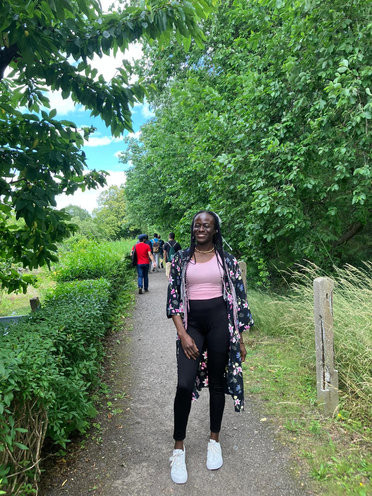

ABOUT ME

My name is Chidimma Eze-Philip, I am currently concluding my Electrical Engineering program by May, 2024;
and I am super excited about it. Meanwhile, while I am waiting on having my convocation
by the 23rd of May, it was important for me to learn and intern at many places as much as possible before the end of my programme.
Gratefully, I had succesfully completed 2 internship programs in Germany. There I worked
in an automation machinery company _ Haver and Boecker; where I participated in:
switch cabinet construction
electrical wiring basics
Making of Radimat
And in my second internship, I worked in an 'International Training and Support' company.
My job descriptions include:
course work editing
Project Management
PLC Program Trainee
In addition, I enrolled for an exchange studies programme for one year in TUBAF, Germany. There, I took a masters course in Mechanical and Process Engineering.
during this course programme, I got a part time job as a Research assistance in a Prestigious research institute know as Helmholtz Research Institute. I enjoyed my stay admist those learning processes because the Job offered me the opportunity to work intensively in the laboratory over finding and analysizing the different refractive index of rare-earth solutions using optics. Although I had worked with Koppern Company in the crushing and separation of mined materials as a student assistant for just 3 months, yet it was a beautiful exposure to the processes involved in the beneficiation of raw materials before my main studies began.
Upskill on Web development by Genesys
Participating in the "2024 cohort" on web-development _ an upskill programme organized by Genesys is a good achievement for my resume. Honestly, I am super grateful to the team at Genesys for being so thoughtful of such an amazing offer as this. The journey so far has been very inspiring _ an interesting corordinator, a team of qualified teachers, a lively community. I am getting myself ready for so many amazing opportunities I can maximize from now. I hope to grow indepth with the skill I am learning, and be able to serve the world better.
my contact addresses are: facebook, linkedin
please click on this link to find 'questions and answers' Q&A